ROOM SAMPLE
データベースに
保存しよう
A09では「メモをぜんぶまとめて1つの文字列」で保存しました。
今回は1件ずつ番号を付けて保存し、あとから書き換え・削除ができるようにします。
今日のゴール
データを1件ずつ保存して、一覧に表示するアプリを作ります。保存したデータには id という番号が自動で付きます。その番号を指定すると、あとから書き換えたり削除したりできます。
{kind=link}
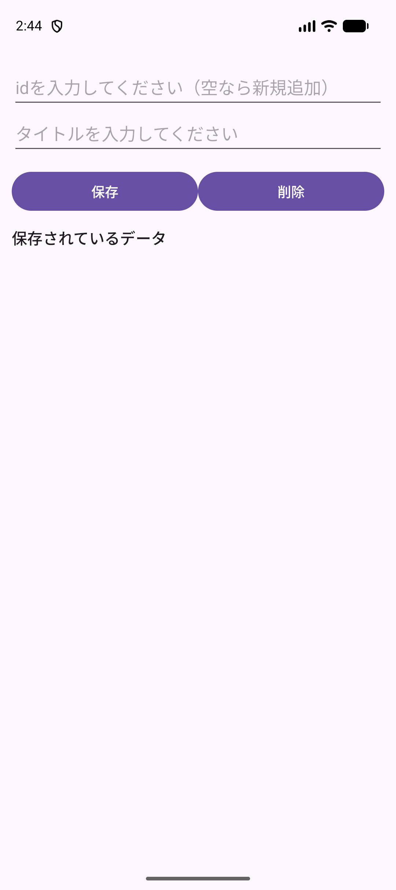
{kind=link}
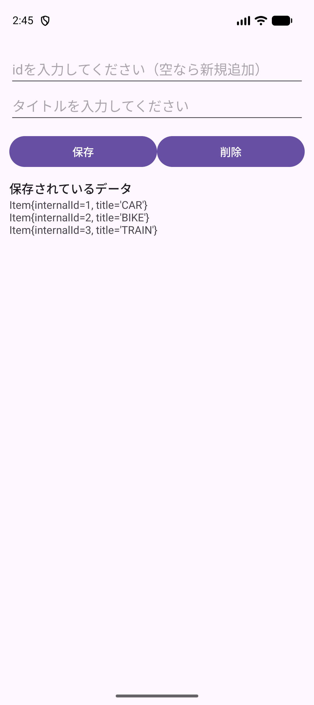
{kind=link}
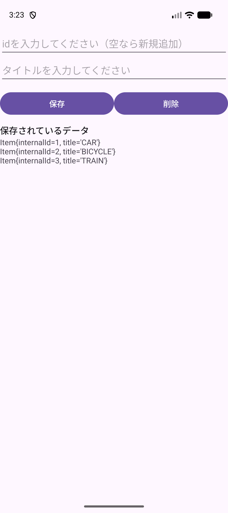
{kind=link}
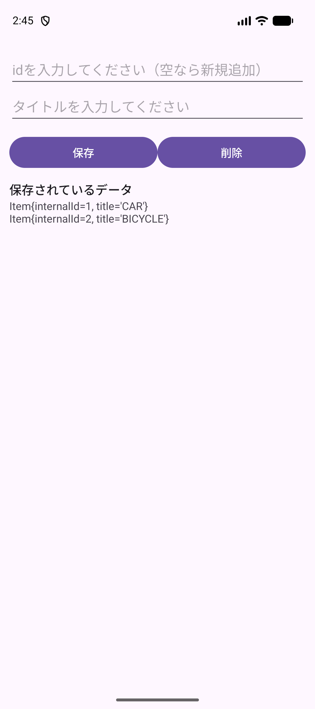
できるようになること
- 入力したタイトルを、1件ずつ保存できる。
- 保存したデータに自動で付く
idの意味を説明できる。 idを指定して、1件だけ書き換えられる。idを指定して、1件だけ消せる。
今日使う技術
| 技術 | どこで使うか | 学んだ単元 |
|---|---|---|
EditText と Button | タイトルとidを入力して、保存・削除する。 | A07 |
Snackbar | 入力が空のときに知らせる。 | A07 |
ScrollView | データが増えても一覧を見られるようにする。 | A09 |
| Room | データを1件ずつ保存する。今回の新顔です。 | — |
新しく覚えることは Room だけです。残りはA07とA09で使ったものを組み合わせます。
解説：A09のSharedPreferencesと何が違うのか
A09では、メモの一覧をまとめて1つの文字列にして保存しました。この方法だと「3件目だけ書き換える」「2件目だけ消す」ができません。全部を読み出して、自分で切り分けて、また全部を書き戻すことになります。
Roomは、データを1件ずつ、表の1行として保存します。1行ごとに番号（id）が付くので、番号を指定して1件だけ書き換え・削除ができます。データが増えても、必要な1行だけを触れます。
| SharedPreferences（A09） | Room（今回） | |
|---|---|---|
| 保存の形 | 名前と値の組。値は1つの文字列 | 表。1件が1行 |
| 1件だけ書き換え | できない | できる |
| 1件だけ削除 | できない | できる |
| 向いているもの | 設定値、ログイン状態など少ないデータ | 件数が増えるデータ |
ここで止まって、確認
できたらチェックします。困ったときはSTEP番号と画面を先生に見せましょう。
プロジェクトを作って実行
授業環境はMacと Android Studio Panda 2 | 2025.3.2 です。A09までとは別のプロジェクトを作ります。
毎回、自分で新規作成します
作る場所は Documents/Android1/A10RoomSample です。完成プロジェクトは答え合わせ用で、授業の入力は自分で作ったプロジェクトに書きます。
- Android Studioの New Project をクリックします。別のプロジェクトを開いているときは File → New → New Project を選びます。
- Phone and Tablet → Empty Views Activity → Next の順に選びます。名前に Views があることを確認します。
{kind=link}
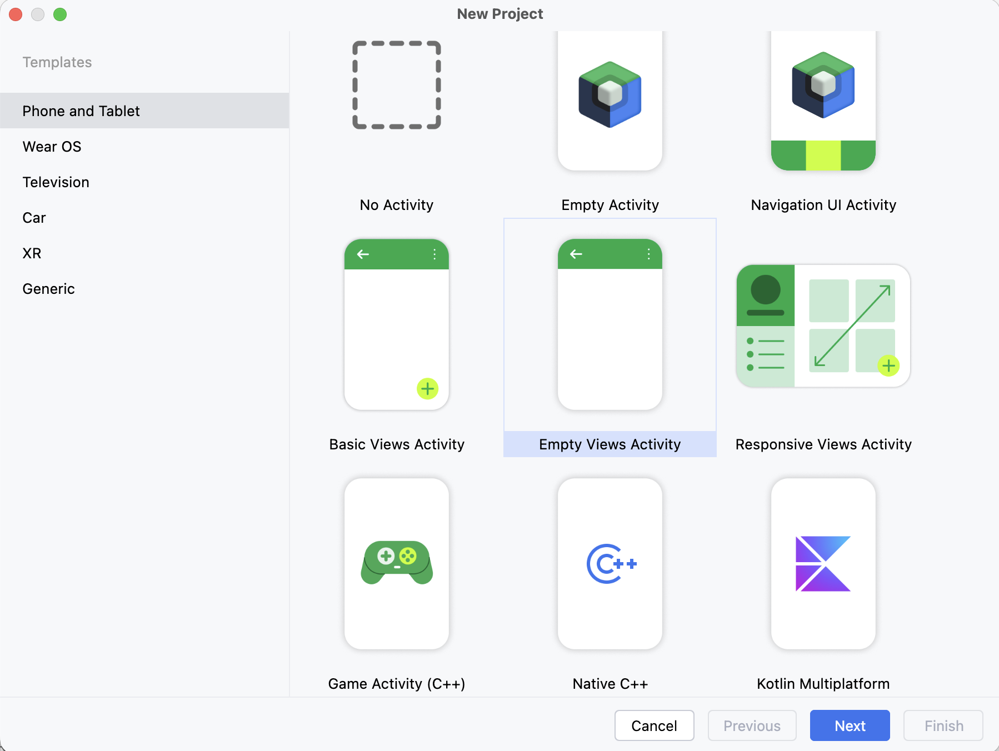
- 次の表のとおりに入力・選択して Finish を押します。
| 項目 | 入力・選択する内容 |
|---|---|
| Name | A10RoomSample |
| Package name | jp.ac.jec.a10roomsample（すべて小文字） |
| Save location | /Users/ユーザ名/Documents/Android1/A10RoomSample |
| Language | Java |
| Minimum SDK | API 31 ("S"; Android 12.0) |
| Build configuration language | Kotlin DSL (build.gradle.kts) [Recommended] |
{kind=link}
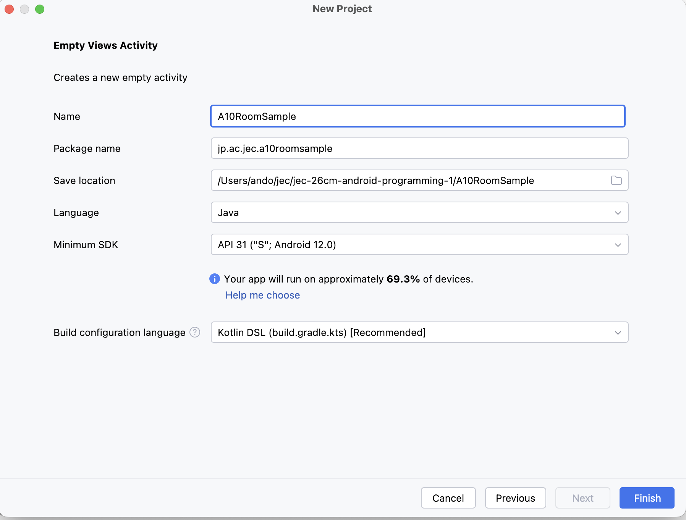
Documents/Android1/A10RoomSample に読み替えます。 画像を大きく開く- Sync（歯車の読み込み）が終わるまで待ちます。
- 端末欄で jec_26cm_android1_Pixel 9a を選び、Run（▶）を押します。白い画面に Hello World! が出れば成功です。
エミュレータが出てこないときは共通資料：エミュレータを見ます。
ここで止まって、確認
できたらチェックします。困ったときはSTEP番号と画面を先生に見せましょう。
Roomを使えるようにする
Roomは、Android Studioに最初から入っている部品ではありません。使うと宣言してから使います。この宣言を2つのファイルに分けて書きます。
① バージョンを書く場所
gradle/libs.versions.toml を開きます。ここはどの部品をどのバージョンで使うかを一覧にしておくファイルです。Android Studioがひな形として用意しています。
3か所に追記します。行を足す場所を間違えないように、見出し（[versions] など）をよく見てください。
libs.versions.toml（全体）
[versions]
agp = "9.1.1"
junit = "4.13.2"
junitVersion = "1.3.0"
espressoCore = "3.7.0"
appcompat = "1.8.0"
material = "1.14.0"
activity = "1.13.0"
constraintlayout = "2.2.2"
room = "2.6.1"
[libraries]
junit = { group = "junit", name = "junit", version.ref = "junit" }
ext-junit = { group = "androidx.test.ext", name = "junit", version.ref = "junitVersion" }
espresso-core = { group = "androidx.test.espresso", name = "espresso-core", version.ref = "espressoCore" }
appcompat = { group = "androidx.appcompat", name = "appcompat", version.ref = "appcompat" }
material = { group = "com.google.android.material", name = "material", version.ref = "material" }
activity = { group = "androidx.activity", name = "activity", version.ref = "activity" }
constraintlayout = { group = "androidx.constraintlayout", name = "constraintlayout", version.ref = "constraintlayout" }
room-runtime = { group = "androidx.room", name = "room-runtime", version.ref = "room" }
room-compiler = { group = "androidx.room", name = "room-compiler", version.ref = "room" }
[plugins]
android-application = { id = "com.android.application", version.ref = "agp" }| 追記する場所 | 追記する行 | 意味 |
|---|---|---|
[versions] の中 | room = "2.6.1" | Roomのバージョンに room という名前を付ける |
[libraries] の中 | room-runtime = ... | アプリが動くときに使う本体 |
[libraries] の中 | room-compiler = ... | ビルドのときに、書いた命令からコードを自動で作る部品 |
[plugins] に書かないこと
[libraries] と [plugins] は見た目が似ています。[plugins] のほうに書くと expected to find any of 'id' or 'version' というエラーでビルドが止まります。追記した2行から上へたどって、最初に出てくる見出しが [libraries] になっているかを確かめてください。
② 使うと宣言する場所
app/build.gradle.kts を開き、dependencies { } の中に2行を追加します。
implementation(libs.room.runtime)
annotationProcessor(libs.room.compiler)libs.room.runtime の libs. は、①で書いた libs.versions.toml のことです。room-runtime のハイフンは、ここでは ドット（room.runtime）に変わります。
Syncする
画面の上に Sync Now というリンクが出ます。押して、読み込みが終わるまで待ちます。エラーが出なければ成功です。
ここではまだ画面は変わりません
部品を用意しただけなので、Runしても Hello World! のままです。エラーなくSyncできていればSTEP 02は合格です。
ここで止まって、確認
できたらチェックします。困ったときはSTEP番号と画面を先生に見せましょう。
画面を作る
入力欄2つ、ボタン2つ、一覧の表示欄を並べます。app/src/main/res/layout/activity_main.xml を開き、中身をすべて次のコードに置き換えます。
<?xml version="1.0" encoding="utf-8"?>
<ScrollView xmlns:android="http://schemas.android.com/apk/res/android"
xmlns:tools="http://schemas.android.com/tools"
android:id="@+id/main"
android:layout_width="match_parent"
android:layout_height="match_parent"
tools:context=".MainActivity">
<LinearLayout
android:layout_width="match_parent"
android:layout_height="wrap_content"
android:orientation="vertical">
<EditText
android:id="@+id/edt_id"
android:layout_width="match_parent"
android:layout_height="wrap_content"
android:hint="idを入力してください（空なら新規追加）"
android:importantForAutofill="no"
android:inputType="number"
android:maxLength="9"
android:minHeight="48dp" />
<EditText
android:id="@+id/edt_title"
android:layout_width="match_parent"
android:layout_height="wrap_content"
android:hint="タイトルを入力してください"
android:importantForAutofill="no"
android:inputType="text"
android:minHeight="48dp" />
<LinearLayout
android:layout_width="match_parent"
android:layout_height="wrap_content"
android:layout_marginTop="12dp"
android:orientation="horizontal">
<Button
android:id="@+id/btn_upsert"
android:layout_width="0dp"
android:layout_height="wrap_content"
android:layout_weight="1"
android:text="保存" />
<Button
android:id="@+id/btn_delete"
android:layout_width="0dp"
android:layout_height="wrap_content"
android:layout_weight="1"
android:text="削除" />
</LinearLayout>
<TextView
style="@style/TextAppearance.Material3.TitleMedium"
android:layout_width="wrap_content"
android:layout_height="wrap_content"
android:layout_marginTop="12dp"
android:text="保存されているデータ" />
<TextView
android:id="@+id/txt_item_list"
android:layout_width="match_parent"
android:layout_height="wrap_content"
tools:text="Item{internalId=1, title='ロボット1号'}" />
</LinearLayout>
</ScrollView>| 部品 | id | 役割 |
|---|---|---|
| EditText | edt_id | 書き換え・削除したいデータの番号を入れる。空なら新規追加 |
| EditText | edt_title | 保存するタイトルを入れる |
| Button | btn_upsert | 保存する |
| Button | btn_delete | 削除する |
| TextView | txt_item_list | 保存されているデータを表示する |
気をつけるところ
- いちばん外側が
ScrollViewです。データが増えても下まで見られるようにするためです（A09と同じ考え方）。 edt_idにはandroid:inputType="number"を付けます。数字だけのキーボードが出て、文字を入れられなくなります。- ボタン2つは
layout_width="0dp"とlayout_weight="1"で横に半分ずつ並びます。
Runで確かめる
入力欄2つとボタン2つ、「保存されているデータ」の見出しが出れば成功です。ボタンを押してもまだ何も起きません。
ここで止まって、確認
できたらチェックします。困ったときはSTEP番号と画面を先生に見せましょう。
保存するデータの形を決める
Roomは、データを表の形で保存します。まず「1行にどんな項目があるか」を決めます。これを書くのが Item クラスです。
① クラスを作る
プロジェクト画面で app/src/main/java/jp/ac/jec/a10roomsample を右クリックし、New → Java Class を選びます。
{kind=link}
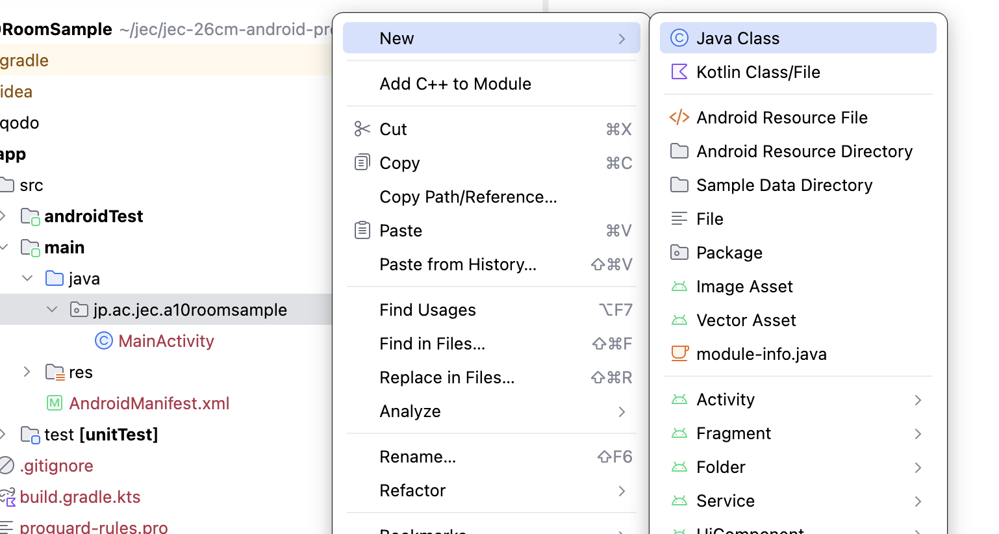
名前に Item と入力し、下の一覧で Class を選んで return を押します。
{kind=link}
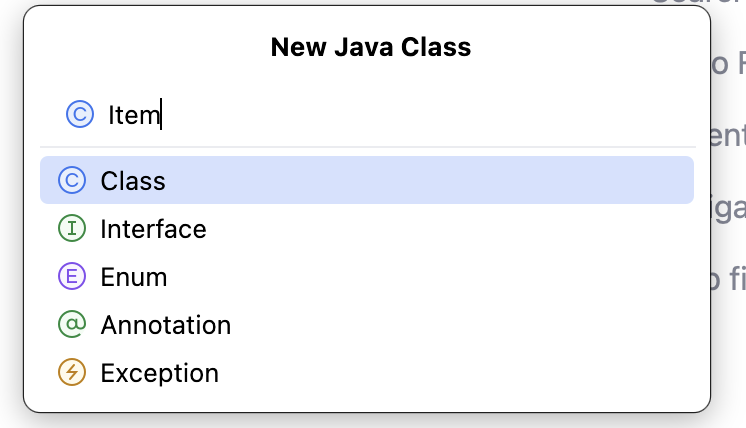
② 中身を書く
できた Item.java の中身を、すべて次のコードに置き換えます。
package jp.ac.jec.a10roomsample;
import androidx.annotation.NonNull;
import androidx.room.Entity;
import androidx.room.PrimaryKey;
@Entity
public class Item {
@PrimaryKey(autoGenerate = true)
private int internalId;
@NonNull
private String title;
public Item(@NonNull String title) {
this.title = title;
}
public int getInternalId() {
return internalId;
}
public void setInternalId(int internalId) {
this.internalId = internalId;
}
@NonNull
public String getTitle() {
return title;
}
public void setTitle(@NonNull String title) {
this.title = title;
}
@Override
public String toString() {
return "Item{" +
"internalId=" + internalId +
", title='" + title + '\'' +
'}';
}
}| 書いたもの | 意味 |
|---|---|
@Entity | このクラスが表1つ分であるという印。クラス名 Item がそのまま表の名前になる |
@PrimaryKey(autoGenerate = true) | この項目が行を見分ける番号。autoGenerate = true で、保存するたびに1・2・3…と自動で増える |
internalId | 自動で付く番号。画面の edt_id に入れるのはこの番号 |
title | 保存したい文字。表の項目はこの2つだけ |
@NonNull はここだけ書きます
この授業では @NonNull を自分で書きません。ただし @Entity のフィールドに付けた @NonNull は、Javaの注意書きではなく「この列は空にできない」という表の決まりそのものです。外すと表の形が変わってしまうので、ここだけは書きます。
toString() は表示のために使います
STEP 07で一覧を表示するときに、Item をそのまま文字にして並べます。画面に出ている Item{internalId=1, title='CAR'} という表示は、このメソッドが作っています。
ここで止まって、確認
できたらチェックします。困ったときはSTEP番号と画面を先生に見せましょう。
読み書きの命令を書く
次に「どう読み書きするか」を書きます。これが ItemDao です。Dao は Data Access Object の略で、データベースへの窓口です。
① インタフェースを作る
STEP 04と同じ手順で New → Java Class を開き、名前に ItemDao と入力します。ここだけは一覧で Interface を選びます。
{kind=link}
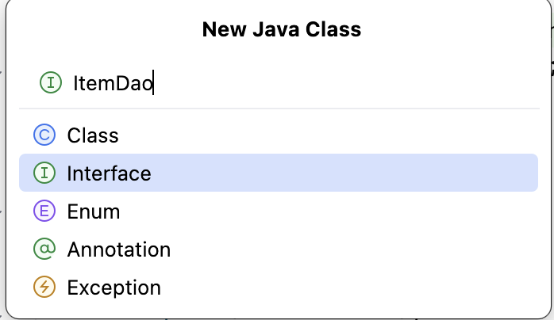
② 中身を書く
package jp.ac.jec.a10roomsample;
import androidx.annotation.Nullable;
import androidx.room.Dao;
import androidx.room.Delete;
import androidx.room.Query;
import androidx.room.Upsert;
import java.util.List;
@Dao
public interface ItemDao {
@Query("SELECT * FROM item")
List<Item> getAll();
@Nullable
@Query("SELECT * FROM item WHERE internalId = :internalId")
Item findByInternalId(int internalId);
@Upsert
void upsert(Item item);
@Delete
void delete(Item item);
}| 書いたもの | 意味 |
|---|---|
@Dao | このインタフェースがデータベースへの窓口であるという印 |
@Query("SELECT * FROM item") | 表の中身を全部取り出す。item は Item クラスから作られた表の名前 |
@Query("... WHERE internalId = :internalId") | 番号を1つ指定して、その1件を取り出す。:internalId はメソッドの引数のこと |
@Upsert | あれば書き換え、なければ追加。upsert は update と insert を合わせた言葉 |
@Delete | 渡した1件を消す |
中身（処理）を書かなくてよい理由
メソッドに { } がありません。ビルドするときにRoomが自動で中身を作ります。STEP 02で追加した room-compiler がその仕事をしています。私たちが書くのは「何をしたいか」だけです。
なぜ @Upsert だけなのか
Roomには @Insert（追加）と @Update（書き換え）もあります。この授業では、2つを使い分ける判断を増やさないために @Upsert 1つにまとめています。idが空なら追加、idを入れたら書き換え、という画面の動きがそのままメソッド1つに対応します。
ここで止まって、確認
できたらチェックします。困ったときはSTEP番号と画面を先生に見せましょう。
データベース本体を作る
表（Item）と窓口（ItemDao）ができました。最後に、それをまとめるデータベース本体を作ります。
① クラスを作る
STEP 04と同じ手順で New → Java Class を開き、名前に AppDatabase と入力します。種類は Class です。
{kind=link}
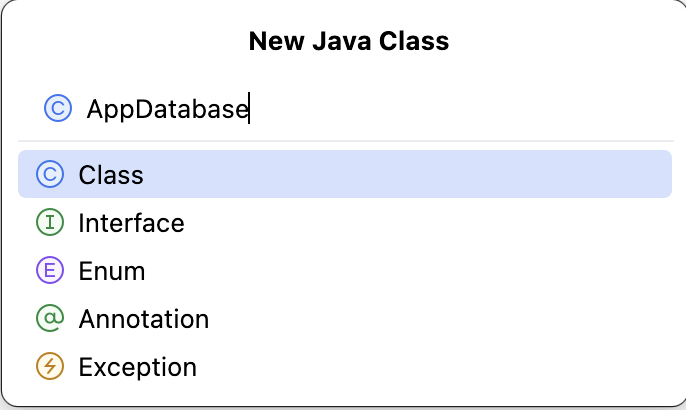
② 中身を書く
package jp.ac.jec.a10roomsample;
import android.content.Context;
import androidx.room.Database;
import androidx.room.Room;
import androidx.room.RoomDatabase;
@Database(entities = {Item.class}, version = 1, exportSchema = false)
public abstract class AppDatabase extends RoomDatabase {
private static AppDatabase instance;
public abstract ItemDao itemDao();
/**
* データベースを取得する.
* 1つだけ作って使い回す書き方をシングルトンという.
* allowMainThreadQueries()は、読み書きを画面と同じスレッドで行うための指定.
* 本来は別スレッドで行うが、この授業では扱わない.
*/
public static AppDatabase getInstance(Context context) {
if (instance == null) {
instance = Room.databaseBuilder(context.getApplicationContext(), AppDatabase.class, "app.db")
.allowMainThreadQueries()
.build();
}
return instance;
}
}| 書いたもの | 意味 |
|---|---|
@Database(entities = {Item.class}, version = 1) | このデータベースが Item の表を持つという宣言。version は表の形を変えたときに増やす番号 |
abstract class / abstract ItemDao itemDao() | 中身はRoomが自動で作るので abstract（中身を書かない）にする |
getInstance(Context context) | データベースを取り出すメソッド。1つだけ作って使い回します |
"app.db" | 端末に作られるファイルの名前 |
allowMainThreadQueries() | 読み書きを画面と同じ流れで行う指定。この授業ではこれを付けます |
なぜ1つだけ作って使い回すのか
データベースを開く準備には時間がかかります。ボタンを押すたびに作り直すと、そのたびに待たされます。そこで最初の1回だけ作って、あとは同じものを返す書き方にします。この書き方をシングルトンといい、Roomの公式資料でもこの形がすすめられています。
context.getApplicationContext() を忘れない
Room.databaseBuilder(...) の最初に渡しているのは、受け取った context そのままではなく context.getApplicationContext() です。ここを context のままにすると、画面を回すたびに古い画面が消えずに残り続けます。作ったデータベースはアプリが終わるまで残るため、画面ではなくアプリ全体を渡します。
ここで止まって、確認
できたらチェックします。困ったときはSTEP番号と画面を先生に見せましょう。
画面とつないで完成
部品がそろいました。MainActivity.java の中身を、すべて次のコードに置き換えます。
package jp.ac.jec.a10roomsample;
import android.os.Bundle;
import android.widget.EditText;
import android.widget.TextView;
import androidx.activity.EdgeToEdge;
import androidx.appcompat.app.AppCompatActivity;
import androidx.core.graphics.Insets;
import androidx.core.view.ViewCompat;
import androidx.core.view.WindowInsetsCompat;
import com.google.android.material.snackbar.Snackbar;
public class MainActivity extends AppCompatActivity {
@Override
protected void onCreate(Bundle savedInstanceState) {
super.onCreate(savedInstanceState);
EdgeToEdge.enable(this);
setContentView(R.layout.activity_main);
ViewCompat.setOnApplyWindowInsetsListener(findViewById(R.id.main), (v, insets) -> {
Insets systemBars = insets.getInsets(WindowInsetsCompat.Type.systemBars());
v.setPadding(systemBars.left, systemBars.top, systemBars.right, systemBars.bottom);
return insets;
});
var edtId = (EditText) findViewById(R.id.edt_id);
var edtTitle = (EditText) findViewById(R.id.edt_title);
var txtItemList = (TextView) findViewById(R.id.txt_item_list);
// データベースを取得する.
var itemDao = AppDatabase.getInstance(this).itemDao();
txtItemList.setText(itemList(itemDao));
findViewById(R.id.btn_upsert).setOnClickListener(v -> {
var title = edtTitle.getText().toString();
if (title.isEmpty()) {
Snackbar.make(v, "タイトルを入力してください", Snackbar.LENGTH_SHORT).show();
return;
}
// idが空なら新規追加、入っていればそのidのデータを書き換える.
var item = new Item(title);
var idStr = edtId.getText().toString();
if (!idStr.isEmpty()) {
item.setInternalId(Integer.parseInt(idStr));
}
itemDao.upsert(item);
txtItemList.setText(itemList(itemDao));
edtId.setText("");
edtTitle.setText("");
});
findViewById(R.id.btn_delete).setOnClickListener(v -> {
var idStr = edtId.getText().toString();
if (idStr.isEmpty()) {
Snackbar.make(v, "削除するidを入力してください", Snackbar.LENGTH_SHORT).show();
return;
}
var item = itemDao.findByInternalId(Integer.parseInt(idStr));
if (item == null) {
Snackbar.make(v, "そのidのデータはありません", Snackbar.LENGTH_SHORT).show();
return;
}
itemDao.delete(item);
txtItemList.setText(itemList(itemDao));
edtId.setText("");
});
}
/**
* 保存されているデータをまとめて1つの文字列にする.
*/
private String itemList(ItemDao itemDao) {
var text = new StringBuilder();
for (var item : itemDao.getAll()) {
text.append(item).append("\n");
}
return text.toString();
}
}読むときの順番
| 行のあたり | やっていること |
|---|---|
var itemDao = AppDatabase.getInstance(this).itemDao(); | データベースを取り出して、窓口（Dao）を受け取る |
txtItemList.setText(itemList(itemDao)); | 起動したときに、保存されているデータを一覧に出す |
btn_upsert のリスナ | タイトルが空なら止める → Item を作る → idが入っていれば setInternalId → upsert → 一覧を出し直す |
btn_delete のリスナ | idが空なら止める → その番号のデータを探す → 見つからなければ止める → delete → 一覧を出し直す |
itemList(ItemDao) | 全部のデータを1行ずつつなげて、1つの文字列にする |
保存したあとに毎回 setText し直しています
データベースに書いても、画面は自動では変わりません。「書いた」と「画面に出す」は別の仕事です。A09で「保存と表示は別物」と学んだのと同じです。
Runで確かめる
- タイトルに
CARと入れて 保存。一覧にItem{internalId=1, title='CAR'}が出ます。 - 続けて
BIKE、TRAINを保存。idが2・3と増えます。 - id欄に
2、タイトルにBICYCLEを入れて 保存。2行目だけ書き換わります。 - id欄に
3を入れて 削除。3行目だけ消えます。 - アプリを終了して開き直します。残っていれば成功です。
{kind=link}
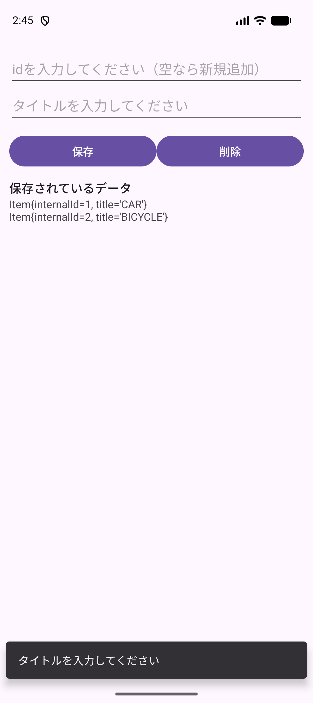
練習
- 存在しないid（例：
99）を入れて 削除 を押すとどうなるか、試して理由を説明する。 - id欄に
1を入れ、タイトルを空にして 保存 を押すとどうなるか、試して理由を説明する。 btn_upsertのリスナからtxtItemList.setText(itemList(itemDao));の1行を消してRunする。保存したデータはどうなっているか、アプリを開き直して確かめる。
保存
自分の Documents/Android1/A10RoomSample を保存します。
教材のチェックは自分用です。先生への送信はしません。印刷は ⌘ P で行えます。
ここで止まって、確認
できたらチェックします。困ったときはSTEP番号と画面を先生に見せましょう。
困ったとき
| 症状 | 見るところ |
|---|---|
expected to find any of 'id' or 'version' でビルドが止まる | STEP 02①。room-runtime と room-compiler を [plugins] ではなく [libraries] に書いているか |
Cannot resolve symbol 'Room' などの赤い波線 | STEP 02。Syncが終わっているか。Sync Now を押したか |
ItemDao の中で赤いエラーが出る | STEP 05①。Class ではなく Interface で作ったか |
Entities and Pojos must have a usable public constructor | STEP 04②。Item のコンストラクタが public か。title のゲッターとセッターがあるか |
| 保存しても一覧が変わらない | STEP 07。setText(itemList(itemDao)) をリスナの中に書いたか |
| importの赤い波線が消えない | 共通資料：Auto Import |
| エミュレータが出てこない | 共通資料：エミュレータ |
| 画面を回すと入力した文字が消える | 共通資料：開発Tips のC章。保存したデータは消えません |
完成プロジェクト
答え合わせ用です。A10RoomSample.zip を展開し、Android Studioの File → Open で開きます。授業の入力は自分で作ったプロジェクトに書きます。
完成した MainActivity.java
package jp.ac.jec.a10roomsample;
import android.os.Bundle;
import android.widget.EditText;
import android.widget.TextView;
import androidx.activity.EdgeToEdge;
import androidx.appcompat.app.AppCompatActivity;
import androidx.core.graphics.Insets;
import androidx.core.view.ViewCompat;
import androidx.core.view.WindowInsetsCompat;
import com.google.android.material.snackbar.Snackbar;
public class MainActivity extends AppCompatActivity {
@Override
protected void onCreate(Bundle savedInstanceState) {
super.onCreate(savedInstanceState);
EdgeToEdge.enable(this);
setContentView(R.layout.activity_main);
ViewCompat.setOnApplyWindowInsetsListener(findViewById(R.id.main), (v, insets) -> {
Insets systemBars = insets.getInsets(WindowInsetsCompat.Type.systemBars());
v.setPadding(systemBars.left, systemBars.top, systemBars.right, systemBars.bottom);
return insets;
});
var edtId = (EditText) findViewById(R.id.edt_id);
var edtTitle = (EditText) findViewById(R.id.edt_title);
var txtItemList = (TextView) findViewById(R.id.txt_item_list);
// データベースを取得する.
var itemDao = AppDatabase.getInstance(this).itemDao();
txtItemList.setText(itemList(itemDao));
findViewById(R.id.btn_upsert).setOnClickListener(v -> {
var title = edtTitle.getText().toString();
if (title.isEmpty()) {
Snackbar.make(v, "タイトルを入力してください", Snackbar.LENGTH_SHORT).show();
return;
}
// idが空なら新規追加、入っていればそのidのデータを書き換える.
var item = new Item(title);
var idStr = edtId.getText().toString();
if (!idStr.isEmpty()) {
item.setInternalId(Integer.parseInt(idStr));
}
itemDao.upsert(item);
txtItemList.setText(itemList(itemDao));
edtId.setText("");
edtTitle.setText("");
});
findViewById(R.id.btn_delete).setOnClickListener(v -> {
var idStr = edtId.getText().toString();
if (idStr.isEmpty()) {
Snackbar.make(v, "削除するidを入力してください", Snackbar.LENGTH_SHORT).show();
return;
}
var item = itemDao.findByInternalId(Integer.parseInt(idStr));
if (item == null) {
Snackbar.make(v, "そのidのデータはありません", Snackbar.LENGTH_SHORT).show();
return;
}
itemDao.delete(item);
txtItemList.setText(itemList(itemDao));
edtId.setText("");
});
}
/**
* 保存されているデータをまとめて1つの文字列にする.
*/
private String itemList(ItemDao itemDao) {
var text = new StringBuilder();
for (var item : itemDao.getAll()) {
text.append(item).append("\n");
}
return text.toString();
}
}完成した activity_main.xml
<?xml version="1.0" encoding="utf-8"?>
<ScrollView xmlns:android="http://schemas.android.com/apk/res/android"
xmlns:tools="http://schemas.android.com/tools"
android:id="@+id/main"
android:layout_width="match_parent"
android:layout_height="match_parent"
tools:context=".MainActivity">
<LinearLayout
android:layout_width="match_parent"
android:layout_height="wrap_content"
android:orientation="vertical">
<EditText
android:id="@+id/edt_id"
android:layout_width="match_parent"
android:layout_height="wrap_content"
android:hint="idを入力してください（空なら新規追加）"
android:importantForAutofill="no"
android:inputType="number"
android:maxLength="9"
android:minHeight="48dp" />
<EditText
android:id="@+id/edt_title"
android:layout_width="match_parent"
android:layout_height="wrap_content"
android:hint="タイトルを入力してください"
android:importantForAutofill="no"
android:inputType="text"
android:minHeight="48dp" />
<LinearLayout
android:layout_width="match_parent"
android:layout_height="wrap_content"
android:layout_marginTop="12dp"
android:orientation="horizontal">
<Button
android:id="@+id/btn_upsert"
android:layout_width="0dp"
android:layout_height="wrap_content"
android:layout_weight="1"
android:text="保存" />
<Button
android:id="@+id/btn_delete"
android:layout_width="0dp"
android:layout_height="wrap_content"
android:layout_weight="1"
android:text="削除" />
</LinearLayout>
<TextView
style="@style/TextAppearance.Material3.TitleMedium"
android:layout_width="wrap_content"
android:layout_height="wrap_content"
android:layout_marginTop="12dp"
android:text="保存されているデータ" />
<TextView
android:id="@+id/txt_item_list"
android:layout_width="match_parent"
android:layout_height="wrap_content"
tools:text="Item{internalId=1, title='ロボット1号'}" />
</LinearLayout>
</ScrollView>